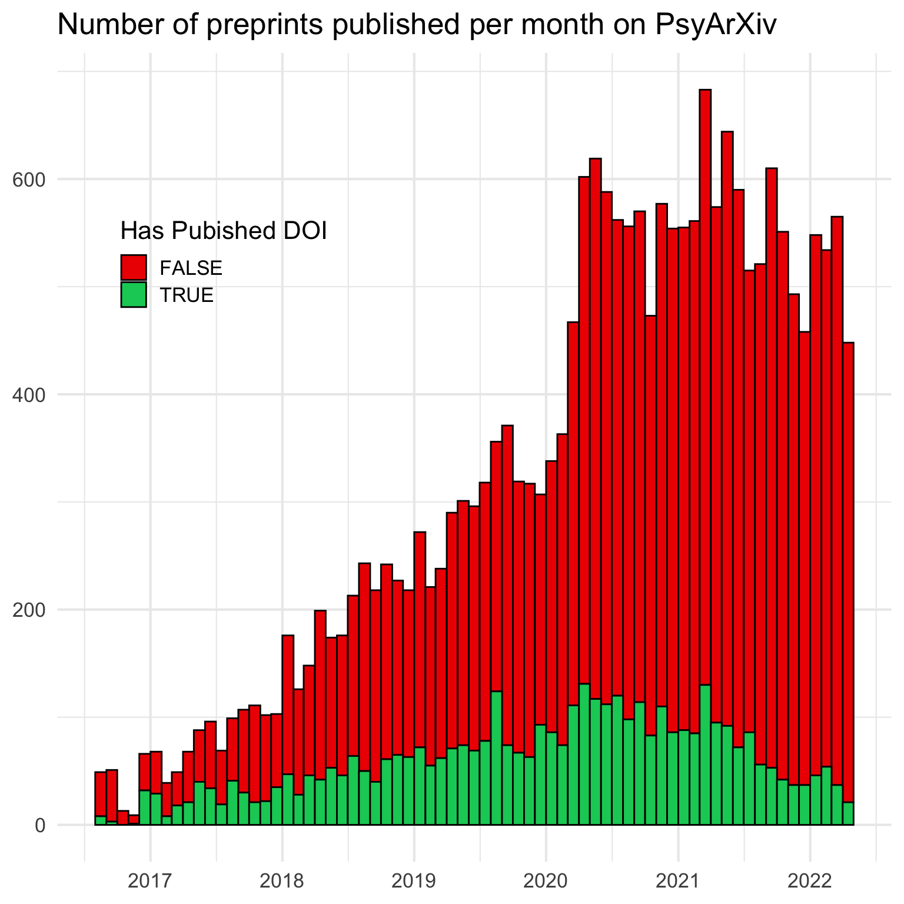
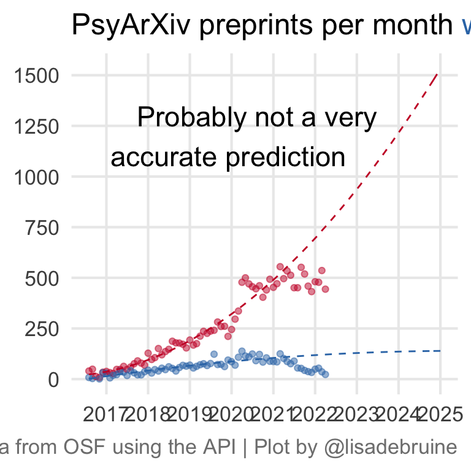

27 Future
27.1 OSF Data
Use the OSF API to search the OSF for preprints from PsyArXiv. Use read_json() to store the JSON returned data as an R list. Each “page” has 10 entries. j$links$last contains the URL of the last page of entries, so extract the page number from that to find out how many pages you’ll need to read.
Set up a location to save the data and write a function to read the data for a page, add it to a list, and save the list to file. I also included a line to output the page number each iteration to keep track.
Code
This can take a few hours to finish, so after you’re done, check the number of pages and read the first one or two pages again (annoyingly, the most recent preprints are on the first page).
Since people will upload new preprints while your script is running, there might be duplicates, so filter them out and resave.
27.1.1 Process data
Comments out the code above so it doesn’t run unless you want it to.
Look at the first list item to find the info you want to extract. Most of the interesting info is in attributes, but some of the items are lists, so you’ll have to handle those.
Code
List of 6
$ license_record :List of 2
..$ copyright_holders:List of 1
.. ..$ : chr ""
..$ year : chr "2022"
$ tags : list()
$ current_user_permissions: list()
$ data_links :List of 1
..$ : chr "https://osf.io/kfhx3/"
$ prereg_links : list()
$ subjects :List of 1
..$ :List of 3
.. ..$ :List of 2
.. .. ..$ id : chr "5b4e7425c6983001430b6c1e"
.. .. ..$ text: chr "Social and Behavioral Sciences"
.. ..$ :List of 2
.. .. ..$ id : chr "5b4e7427c6983001430b6c8c"
.. .. ..$ text: chr "Cognitive Psychology"
.. ..$ :List of 2
.. .. ..$ id : chr "5b4e7429c6983001430b6cfb"
.. .. ..$ text: chr "Judgment and Decision Making"I’m going to use paste() to flatten them, although I’m sure there’s a clever way to use nesting. Iterate over the list items and extract the info you want.
Code
info <- map_df(preprint_data, function(p) {
attr <- map(p$attributes, ~ if (is.list(.x)) {
unlist(.x) %>% paste(collapse = "; ")
} else {
.x
})
attr$id <- p$id
attr
})
info <- info %>%
mutate(created = as_date(date_created),
modified = as_date(date_modified),
published = as_date(date_published),
has_doi = !is.na(doi) & !trimws(doi) == "")27.1.2 Subjects
Code
subjects <- map_df(preprint_data, function(p) {
data.frame(
id = p$id,
subject = map_chr(p$attributes$subjects[[1]], ~.x$text)
)
})
# set factor order to popularity order
subcount <- count(subjects, subject, sort = TRUE)
subjects$subject <- factor(subjects$subject, subcount$subject)
DT::datatable(subcount)27.2 Plots
27.3 Preprints per month
It’s hard than I expected to make a histogram by month.
Code
by_month <- function(x, n=1){
mindate <- min(x, na.rm=T) %>% rollbackward(roll_to_first = TRUE)
maxdate <- max(x, na.rm=T) %>% rollforward(roll_to_first = TRUE)
seq(mindate, maxdate, by=paste0(n," months"))
}
ggplot(info, aes(x = published, fill = has_doi)) +
geom_histogram(breaks = by_month(info$published),
color = "black") +
scale_x_date(date_breaks = "1 year",
date_labels = "%Y") +
scale_fill_manual(values = c("red2", "springgreen3")) +
labs(x = NULL, y = NULL,
fill = "Has Pubished DOI",
title = "Number of preprints published per month on PsyArXiv") +
theme(legend.position = c(.2, .74))
27.4 Predict
This is just a silly linear model with a quadratic term, I don’t really think submissions to PsyArXiv are going to continue to grow forever, but I just need to predict the future for the theme :)
I omitted the data from the past year to account for the slow publication process. I’m not sure if this too conservative or not conservative enough, as many people postprint, rather than preprint, but journal acceptance can take a long time.
Code
data_by_month <- info %>%
mutate(
pub_month = rollback(published, roll_to_first = TRUE),
pub = interval("2016-01-01", pub_month) / months(1),
pub2 = pub^2
) %>%
count(pub_month, pub, pub2, has_doi)
# model from data at least 1 year old
model <- data_by_month %>%
filter(pub_month < (today() - years(1))) %>%
lm(n ~ pub * has_doi + pub2 * has_doi, .)
# predict from start of psyarxiv to 2025
newdat <- crossing(
pub_month = seq(as_date("2016-08-01"),
as_date("2025-01-01"),
by = "1 month"),
has_doi = c(T, F)
) %>%
mutate(
pub = interval("2016-01-01", pub_month) / months(1),
pub2 = pub^2
)
newdat$n <- predict(model, newdat)Code
ggplot(mapping = aes(x = pub_month, y = n, color = has_doi)) +
geom_point(data = data_by_month, alpha = 0.5) +
geom_line(data = newdat, linetype = "dashed") +
annotate("text", label = "Probably not a very\naccurate prediction, \nbut it would be nice ", hjust = 1, x = as_date("2023-07-01"), y = 1200) +
scale_x_date(date_breaks = "1 year",
date_labels = "%Y") +
scale_color_manual(values = c("#CA1A31", "#3477B5")) +
labs(x = NULL, y = NULL, color = NULL,
title = "PsyArXiv preprints per month <span style='color: #3477B5;'>with publication DOIs</span> and <span style='color: #CA1A31;'>without</span>",
caption = "Data from OSF using the API") +
theme(panel.grid.minor = element_blank(),
legend.position = "none",
plot.title = ggtext::element_markdown())